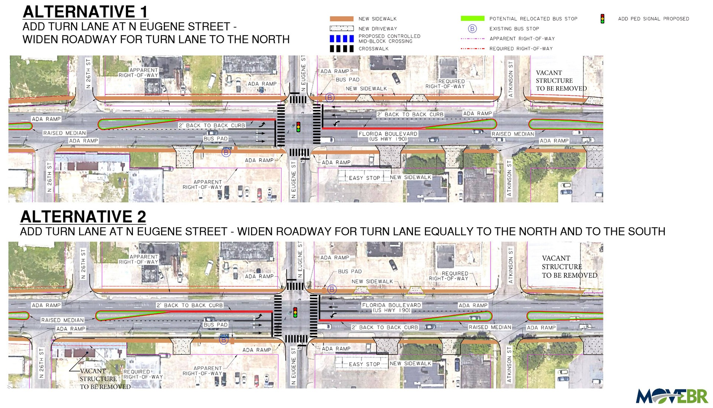

This website provides a web-optimized way of viewing the graphics presented by project staff at Baton Rouge City-Parish's MOVEBR program public open house event on January 25, 2024. These exhibits were obtained from the project website and maps were simply spliced together and are now redisplayed using a "pan-and-zoom" approach. The Florida Boulevard corridor MOVEBR exhibits are divided into three linear sections, by the number of traffic lanes. Note that all exhibits are preliminary and subject to change.
Two different design Alternatives are being considered (as of January 25, 2024) by MOVEBR program officials for how left turn lanes can be accommodated on Florida Street at N. Eugene Street. Either alternative will require right-of-way acquisition and the widening of Florida Street. The two Alternatives are pictured in the MOVEBR program exhibit featured below.
Alternative 1 on top shows an asymetrical widening concept, where property is acquired and the roadway is expanded only to the north. Below it, Alternative 2 shows symmetrical widening, where land acquisition and roadway widening would occur on both sides of Florida Street. At the time of this writing (February 5, 2024) program officials are further analyzing and studying both alternatives, and their potential impacts on surrounding properties. Note that the "4-Lane Segment" button at the top of this page displays only the asymmetrical alternative.
The authoritative source for all MOVEBR program information is the official website movebr.brla.gov.